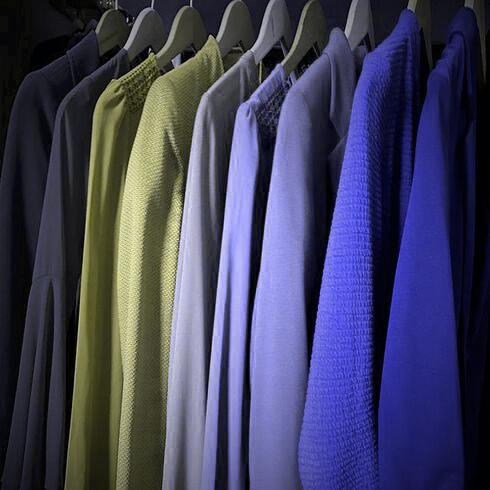

How Color Blinds See the World
Types of Color Blindness
- Protanopia: absence of RED cones; difficult to distinguish shades of RED, YELLOW, and GREEN
- Deuteranopia: absence of GREEN cones; difficult to distinguish shades of RED, YELLOW, and GREEN
- Tritanopia: absence of BLUE cones; difficult to distinguish shades of BLUE and YELLOW

Protanopia

Deuteranopia

Tritanopia